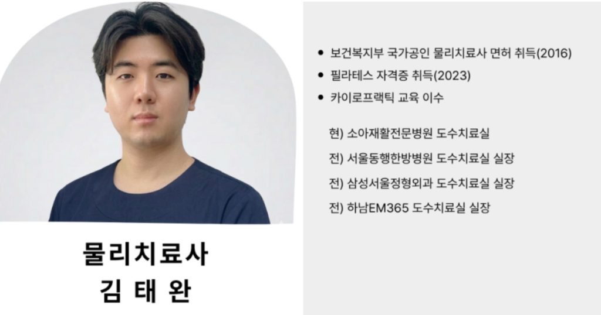
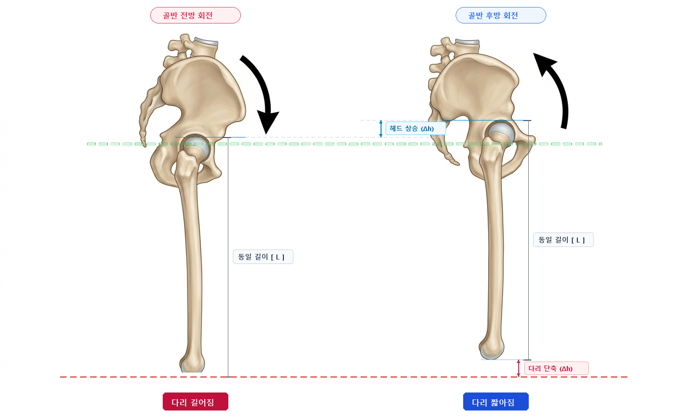
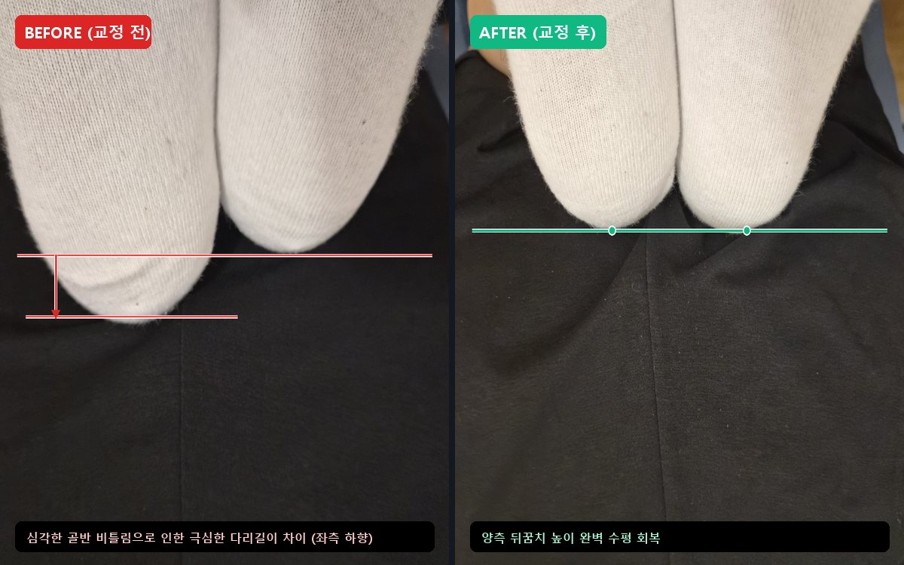
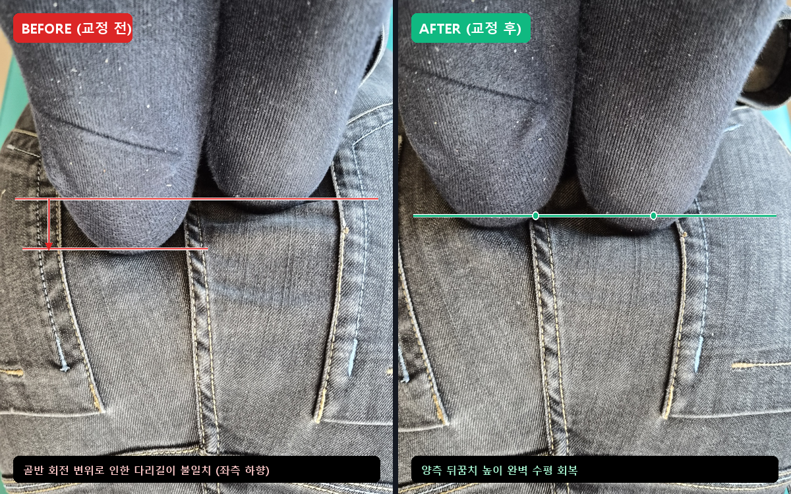

안녕하세요.
물리치료사 출신 체형교정 전문가, 리무브 체형교정 센터장입니다.

일상생활을 하시면서 이런 경험 한 번쯤 있으실 겁니다.
- 치마나 슬랙스를 입고 걷다 보면 자꾸 한쪽으로만 뱅글 돌아간다.
- 거울 앞에 서거나 누웠을 때, 양쪽 다리 길이가 짝짝이인 것 같다.
- 신발 밑창을 살펴보면 유독 한쪽 바깥쪽이나 뒤꿈치만 심하게 닳아있다.
- 아니면.. 그냥 허리가 아프다.
(하나라도 해당되신다면... 오늘 글을 꼭 끝까지 읽어보셔야 합니다ㅎㅎ)
많은 분들이 이런 증상을 겪으실 때
"어? 내가 태어날 때부터 한쪽 다리뼈가 짧은 건가...?"
하며 덜컥 겁을 내시곤 합니다.
하지만 센터에서 정밀 체형 분석을 해보면,
실제로 다리뼈 자체의 길이가 다른 분은 전체의 1%도 되지 않습니다.
그렇다면 나머지 99%는 도대체 왜 다리 길이가 달라 보이는 걸까요?
💡 다리뼈가 긴 게 아니라, '골반'이 비틀린 것입니다
다리가 연결된 골반 양쪽 뼈(장골, Ilium)는 앞뒤로 미세하게 회전이 가능합니다.
이때 회전의 방향에 따라 다리가 길어 보이기도, 짧아 보이기도 하구요.
평소 짝다리를 짚거나, 다리를 꼬거나, 한쪽으로 비스듬히 앉는 습관들이 누적되면
한쪽 골반은 앞으로 기울어지고(전방경사), 반대쪽 골반은 뒤로 눕게 되는 '골반의 회전 변위'가 일어납니다.

골반이 앞으로 회전(전방경사)하면 고관절이 아래로 밀려 다리가 길어지고,
골반이 뒤로 눕게(후방경사) 되면 고관절이 위로 당겨져 다리가 짧아집니다.
다리뼈 자체의 길이가 달라진 게 아니라, 비틀린 골반이 다리를 위아래로 밀고 당기고 있었던 것이죠.
실제 리무브 체형교정을 찾아주신 고객님들의 전후 임상 사례를 통해 직접 보여드리겠습니다.
💡 1. "허리가 끊어질 듯 아파서 누웠더니, 다리길이가 짝짝이래요"

장시간 앉아서 근무하시며 극심한 만성 허리 통증과 뻐근함을 호소하셨던 고객님입니다.
베드에 편안히 엎드려 무릎을 90도로 접어보는 정밀 평가(Prone Knee Flexion Test)를 진행했을 때의 모습입니다.
사진 왼쪽(BEFORE)을 보시면,
오른쪽 발꿈치가 왼쪽보다 심하게 짧아져 있는 것을 확인하실 수 있습니다.
고객님께서도 촬영된 사진을 직접 확인하시고는
"선생님, 제 다리가 왜 이렇게까지 차이가 나요?!"
라며 깜짝 놀라셨습니다. (이러니... 아프죠)
이 상태로 매일 1만 보씩 걷고 생활하셨으니, 짝짝이 다리로 인해 허리와 골반 한쪽으로만 체중이 쏠리니 통증이 생길 수밖에 없었던 것이죠.
굳어진 골반 주변 근육을 정밀하게 이완하고, 틀어진 천장관절을 바로잡는 1:1 맞춤 수기 교정을 진행했습니다.
그리고 오른쪽(AFTER) 사진을 보시면,
단 한 번의 교정 세션만으로 양측 뒤꿈치가 완벽한 수평선을 되찾은 것을 보실 수 있습니다.
"선생님, 일어났는데 양발로 바닥을 딛는 느낌이 완전히 달라요!"

💡 2. 다리 꼬는 습관, 짝다리가 만든 '골반 회전'

"선생님, 저는 무거운 짐을 드는 일도 안 하는데 왜 골반이 틀어질까요?"
일상 속 사소한 자세 습관이 가장 무섭습니다.
서 있을 때 한쪽 다리에만 체중을 싣는 짝다리, 카페나 사무실에서 습관적으로 다리를 꼬는 자세는
골반을 후방으로 회전시켜버립니다.
두 번째 고객님은 주로 오른다리로 짝다리를 짚고, 오른다리를 왼다리 위에 올려 꼬는 습관이 있으셨습니다.
후방으로 회전된 골반 정렬을 바로잡고, 비틀려 굳어있던 주변 근육을 부드럽게 정상화하는 1:1 맞춤 교정을 진행했습니다.
그 결과, 보시는 것처럼 양쪽 발끝의 높이가 칼같이 정확한 수평 정렬을 회복하셨습니다.
골반의 수평이 맞춰지면, 골반 위에 얹혀 있던 허리와 척추의 부담도 즉각적으로 줄어들게 됩니다.

💡 3. "교정받아도 며칠 지나면 또 틀어져요..." 뼈만 생각해서는 안 되는 이유
많은 분들이 체형교정을 받으실 때 이런 질문을 자주 하십니다.
"선생님, 교정받고 나면 다리길이가 딱 맞는데... 며칠 지나면 왜 또 원래대로 돌아가는 느낌이 들까요?"
현장에서 수많은 임상을 보며 느낀 진실을 솔직하게 말씀드리겠습니다.
틀어진 뼈(골반)만 제자리에 맞추는 교정은 반쪽짜리에 불과합니다.
우리 몸의 뼈는 혼자서 움직이지 않습니다.
뼈를 움직이게 만드는 것은 결국 '근육'입니다.
골반이 수개월, 수년 동안 틀어져 있었다면,
골반 주변의 근육들은 '비틀어진 뼈의 위치'에 맞춰 스스로 적응(보상 작용)을 마친 상태입니다.
- 어떤 근육은 틀어진 골반을 버티느라 팽팽하게 늘어나 굳어버렸고,
- 어떤 근육은 짧아진 채로 단단하게 뭉쳐 본래의 이완 기능을 완전히 잃어버렸습니다.
이 상태에서 근육은 그대로 둔 채, 뼈만 억지로 제자리에 맞춰놓으면 어떻게 될까요?
이미 비뚤어진 위치에 적응해버린 근육들이,
마치 질긴 고무줄처럼 바르게 맞춰놓은 뼈를 다시 예전의 틀어진 자리로 끌어당깁니다.
(교정을 받아도 며칠 만에 도로 제자리로 돌아갔던 이유가 바로 이 때문입니다ㅎㅎ)
따라서 진정한 체형교정은 단순히 뼈의 위치만 맞추는 것으로 끝나서는 안 됩니다.
오랜 시간 틀어진 뼈에 맞춰 잘못 적응해버린 근육들을 하나하나 정밀하게 평가하고, 본연의 건강한 길이와 움직임으로 되돌려주는 '근육 교정'이 반드시 함께 이루어져야 합니다.
이미 비정상적인 정렬에 익숙해진 근육들을 '본연의 본래 모습'으로 바로잡아 줄 때,
비로소 바르게 맞춘 골반이 흔들림 없이 그 자리에서 유지되고 재발 없는 진짜 교정이 완성됩니다.
🌿 "불편함을 Remove, 내 몸을 Re-move"

"불편함을 Remove, 내 몸을 Re-move"
오랜 시간 여러분을 괴롭혀온 골반 비틀림과 다리길이 불균형은 깨끗하게 제거(Remove)하고,
틀어진 뼈와 적응해버린 근육을 본래의 건강한 상태로 되돌려 균형 잡힌 바른 움직임을 다시(Re-move) 선물해 드립니다.
- 치마나 바지가 자꾸 한쪽으로 돌아가 신경 쓰이시거나
- 누웠을 때 다리길이가 짝짝이라 허리와 골반이 은근히 뻐근하시거나
- 단순 마사지나 뼈만 맞추는 교정이 아닌, 근본적인 체형 개선을 원하신다면
언제든 편안하게 리무브의 문을 두드려 주세요.
고객님의 몸에 꼭 맞춘 정밀 1:1 맞춤 평가와 진정성 있는 케어로, 매일매일 가벼워지는 일상을 증명해 드리겠습니다.
긴 글 읽어주셔서 진심으로 감사합니다.
[리무브 체형교정 찾아오시는 길]
📍 경기 구리시 갈매순환로 204번길 8-22 1층 (갈매역 도보 5분)
💬 문의/상담: 네이버 톡톡 또는 전화로 편하게 문의주세요.

#리무브체형교정 #구리체형교정 #갈매체형교정 #골반교정 #다리길이교정 #골반틀어짐 #체형교정센터 #물리치료사출신 #허리통증 #재활운동 #체형분석